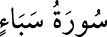

<a name=6899></a><br/>
<b>34- SEBE’ SÛRESİ</b><br/>
<i><b>Mekke’de nâzil olmuştur, 54 âyettir.</b></i><br/>
<i><b>Yalnız 6. âyeti Medine’de inmiştir.</b></i><br/>
<i><b>Sûre adını, Yemen’de bir bölge veya kabile ismi olan</b></i><br/>
<i><b>Sebe’ kelimesinin geçtiği 15. âyetten alır.</b></i><br/>
